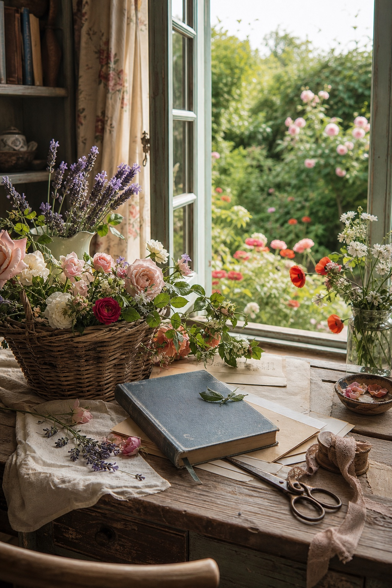
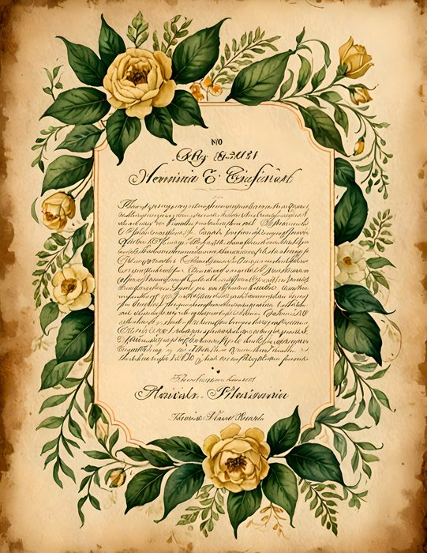

Sometimes the loveliest way back into making is to begin with a generous pile of flowers. No perfect plan, no carefully matched collection, just roses, lavender, poppies, cottage gardens, tropical leaves, and enough paper possibilities to follow whichever mood arrives first.
I gathered 100 free floral pictures into one mixed pack for exactly that kind of afternoon. They are ready for junk journals, scrapbook pages, handmade cards, writing spots, pockets, tags, and the small paper experiments that do not need to become anything important.
Open the free floral gift page and claim all 100 pictures. The gift opens on the page, so there is no link to wait for in your inbox.

A whole garden, not one matching theme
This is a mixed floral pack rather than a single coordinated kit. That means one folder can take you from a pale lavender-field page to cottage roses, warm dahlias, lemony garden colors, vintage handwriting, floral wreaths, bold tropical blooms, and quieter background patterns.
The variety is useful when you are still discovering what you want the page to feel like. Choose one picture that catches you, then let it decide the rest: a blue ribbon for the lavender, old book paper behind the roses, or a coral thread beside the tropical flowers.
Because the collection moves between soft and vivid, it is also easy to share. A friend who loves quiet cottage pages may choose a completely different favorite from someone who journals in saturated color. Print a small selection for a creative afternoon together, then notice how many different stories can begin from the same flower folder.



Use the pictures at the size your project needs
A full picture can become the beginning of a journal page or card front. Printed smaller, the same design can become a pocket, a journal card, a folded note, or the background for a short quote. Crop a favorite flower into a tiny square when you only need one bright detail.
You can also cut around a wreath or panel and leave the center open for handwriting. All-over florals work beautifully as torn strips, page edges, tabs, and small pieces tucked behind plainer paper. There is no need to use a picture whole simply because it arrived that way.
Let one flower choose your palette
If a page starts to feel busy, return to the flower that made you choose it. Pull one leaf green, one soft neutral from the background, and one bloom color. Repeat those three colors in thread, lace, ink, or scraps. The page will feel collected without losing the cheerful abundance that makes floral journaling so comforting.
Keep the folder card with your gift
The download folder now includes a small Sentimentalica PDF card. Keep it beside the pictures. If you rediscover the folder months from now and cannot remember where the florals came from, the card will lead you back to the website, the free gift, the Etsy shop, and Pinterest.
Your free floral afternoon starts here
The pack is a gift from my small studio to your creative table. Choose three pictures, print them, and begin with the one you would be saddest to leave in the folder. That is usually the page that already knows what it wants to become.
Claim the 100 free floral pictures from Sentimentalica. Then come back to the Sentimentalica journal whenever you want a gentle prompt for using them.